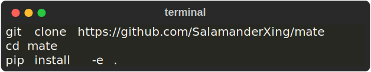
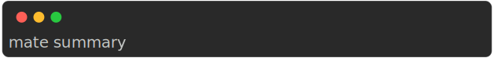

Mate is a tool designed to improve reproducibility and facilitate development in deep learning. It is a command line tool that offers a variety of features to help you manage your project, including
It also creates a universal template for deep learning projects. In addition, any project developed with Mate on a public repository gets automatically listed on MateHub. This website is a browser for finding and reusing components created by others (or yourself). Mate is compatible with any python deep learning framework, such as PyTorch, JAX, and TensorFlow/Keras, since it leverages Python features.
Mate is developed in collaboration with the University of Amsterdam.

JAX is the (relatively) new framework by Google. That uses just-in-time compilation to improve performance of your neural network. These projects are based on this amazing repo.
This example will walk you through training and showing results of your model on a Pytorch-Lightning example.
First let’s clone the project, for example:


This will give you an overview of your project and its components. Besides, it will create a local python virtual environment and install dependencies of this project. It also tells you where your components have issues.

then we can train our experiment:


Finally, to visualize our results:


Mate has inferred the dataset and will group our experiments according to that and put them in the same table.
Before creating a new module (trainer, data_loader, model), you might want to head over to this site and see if there is anything that fits your need or allows you to not start from scratch.
All mate projects on public GitHub repo (published by anyone) will be automatically listed on MateHub. It works by using the GitHub rest API.
For any question, please contact: